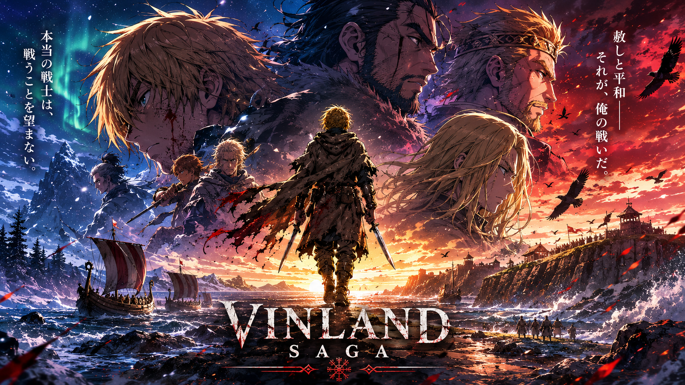
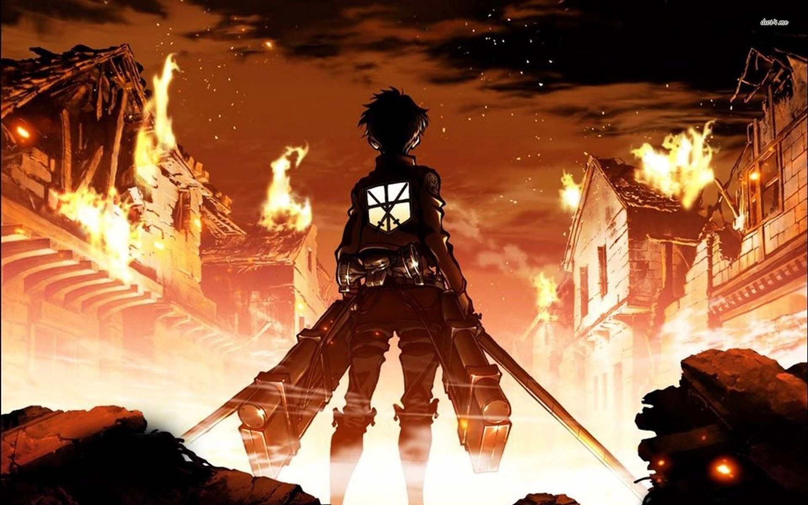
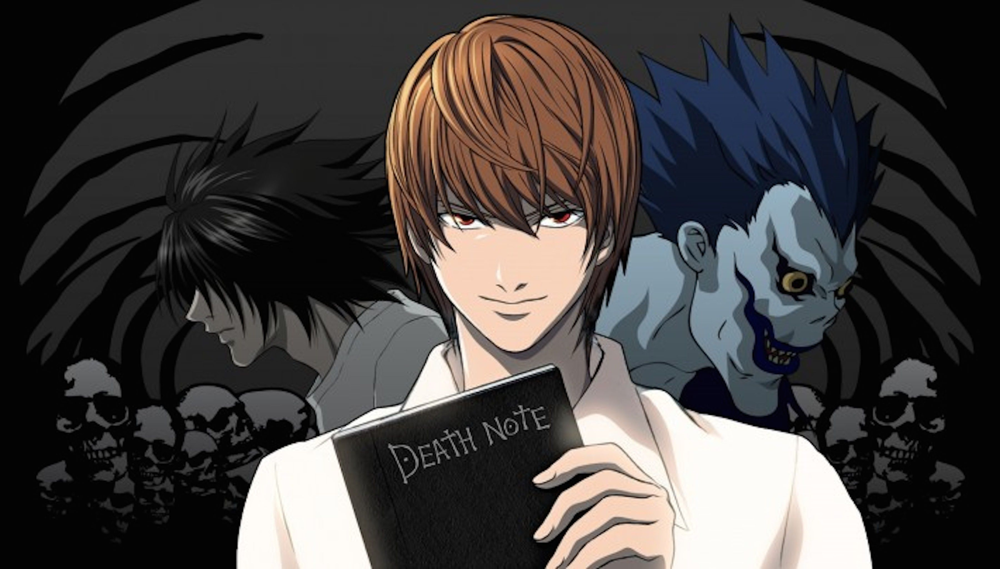

Welcome to Anime Verse — a fan-made anime webpage created purely for web development practice. This project is not official and is only designed to improve HTML, CSS, and design skills while exploring the world of anime. Here you can find anime-inspired sections, characters, visuals, and themes made for learning and creativity purposes only.

A gripping historical anime inspired by Viking legends. Follow Thorfinn's journey through revenge, war, and self-discovery in one of the most powerful character-driven stories in modern anime.

Humanity fights for survival behind enormous walls while terrifying Titans roam beyond them. Packed with mystery, intense action, and unforgettable plot twists, Attack on Titan remains a fan favorite worldwide.

A genius student discovers a notebook with the power to kill anyone whose name is written inside it. What follows is a thrilling battle of intelligence between Light Yagami and the legendary detective L.